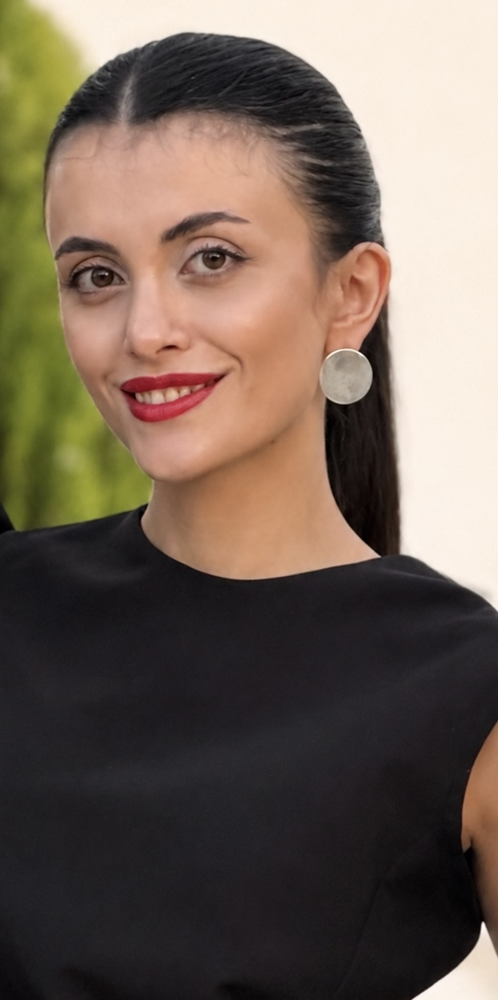

I am a Medical Doctor and AI researcher working at the intersection of medical imaging, neuroimaging, and trustworthy artificial intelligence.
My research focuses on developing reliable AI systems that can quantify and communicate uncertainty, aiming to improve the safety and clinical translation of artificial intelligence in medicine.
Developing uncertainty-aware artificial intelligence methods, including conformal prediction and voxel-wise uncertainty estimation, to improve reliability and interpretability of medical AI systems.
Applying deep learning and computer vision approaches for quantitative analysis of medical images, with a focus on brain imaging and clinical decision support.
Investigating non-invasive prediction of molecular and genetic characteristics from imaging biomarkers.
Exploring multimodal artificial intelligence approaches for connecting medical images with clinical information.
Working on deep learning approaches for medical image analysis, including segmentation, uncertainty estimation, and reliable AI deployment.
Conducting clinical research using liver transplantation registry data, including outcomes, infectious complications, and post-transplant management.
Amir Mahmoud Ahmadzadeh, Nima Broomand Lomer, Mohammad Amin Ashoobi,
Danial Elyassirad, Mahsa Vatanparast, Benyamin Gheiji,
Seyed Ali Jalalian, Mehdi Arab, Farrokh Seilanian Toosi,
Girish Bathla, Shahriar Faghani.
American Journal of Neuroradiology. 2025;46(10):2098.
Amir Mahmoud Ahmadzadeh, Nima Broomand Lomer, Mohammad Amin Ashoobi,
Danial Elyassirad, Benyamin Gheiji, Mahsa Vatanparast,
Amirhossein Rostami, Mohammad Ali Abouei Mehrizi, Azadeh Tabari,
Girish Bathla, Shahriar Faghani.
Neuroradiology. 2025;67:1667–1681.
A complete list of publications is available through my Google Scholar profile.
Recognized for research contributions in artificial intelligence and medical imaging.
Awarded for innovative research in artificial intelligence applications in medical imaging.
Mashhad University of Medical Sciences
Graduated: 2026
Python · PyTorch · TensorFlow · scikit-learn · LightGBM
Deep Learning · Computer Vision · Medical Image Analysis · Uncertainty Quantification · Conformal Prediction · Semi-supervised Learning
Neuroimaging · Radiogenomics · Vision-Language Models · Clinical AI Translation
I am interested in collaborations in medical imaging, trustworthy AI, and clinical artificial intelligence.